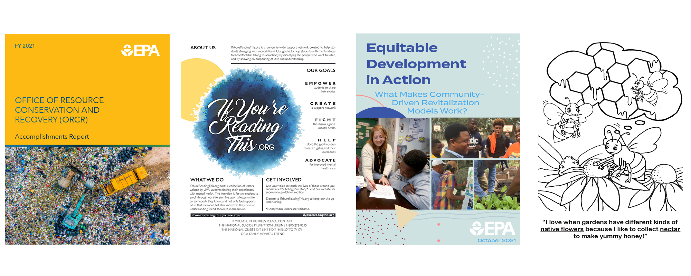

Graphic Design
During my time at Skeo Solutions, an environmental consulting firm, I worked extensively in Adobe InDesign, Lightroom, Photoshop and Illustrator for our primary client, the U.S. Environmental Protection Agency. My work ranged from created print layouts such as brochures, factsheet and reports, to illustrating children's activity books, developing templates and beyond. Many of my projects required coordination with print shops and delivery of physical materials.
I have completed a variety of logo and apparel freelance design work for various organizations over the years, working in Illustrator to create vector-based design files.